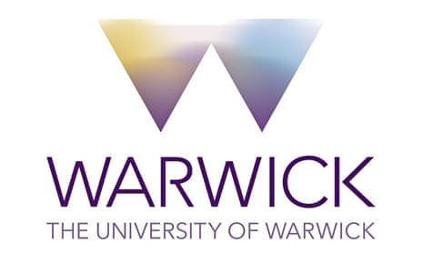

 University of the Punjab
University of the Punjab
Muhammad Shaban
Head of Frontier AI Models · Oncology R&D · AstraZeneca
I am a research scientist with over nine years of experience in computer vision, deep learning, and AI-driven medical image analysis. My current research focuses on developing advanced AI models for multiplex spatial proteomics image analysis, driving innovation in the intersection of computational pathology and AI.